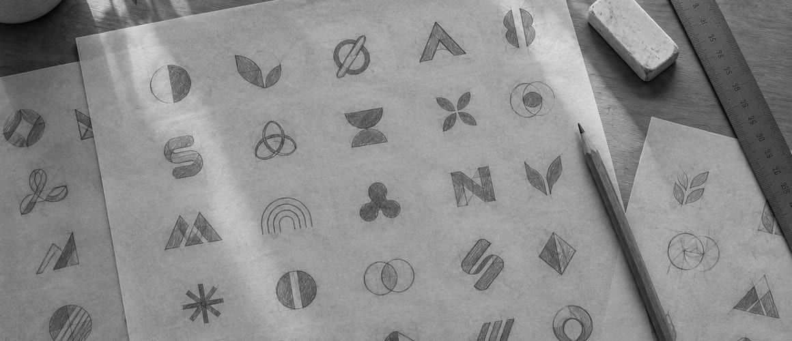

Building a bridge between the memoris of halmonee
The reason for this is plain. Goaded by the instinct of self-preservation, man, like all other living things, has made heroic efforts to meet the demands of his environment. He has been more successful than any other creature and is, as a result, the most complex organism on the earth. But his most baffling complexities resolve themselves into comparatively simple terms once it is recognized that each internal change brought about by his environment brought with it the corresponding external mechanism without which he could not have survived.
Learning to read men and women is a more delightful process than learning to read books.
But there is something that grows and keeps on growing in the Nevada desert—the sagebrush. It couldn't move away and it couldn't change its waterless environment, so it did what you and I must do if we expect to succeed. It adapted itself to its environment, and there it stands, each little stalwart shrub a reminder of what even a plant can do when it tries! He uses his money, as all of us do, to maintain his type-habits and to give freer rein to them, not to change them to any extent. This type likes sameness. He likes to "get acquainted" with a thing. He never takes up fads and is the most conservative of all types. Unlike the Thoracic, he avoids extremes in everything and dislikes anything savoring of the "showy" or conspicuous.